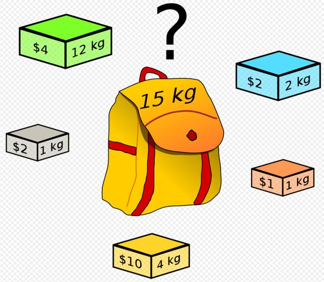

Algorithm - DP演算法
Algorithm - Dynamic Programming
最長遞增子序列的長度
nums = [10,9,2,5,3,7,101,18], LTS=[2,3,7,101] , LTS長度=4
畫圖 (一維)
| index | 0 | 1 | 2 | 3 | 4 | 5 | 6 | 7 |
|---|---|---|---|---|---|---|---|---|
| nums | 10 | 9 | 2 | 5 | 3 | 7 | 101 | 18 |
| dp | 1 | 1 | 1 | 2 | 2 | 3 | 4 | 4 |
dp[3] = 2 , 索引 0 ~ 3 的數字，最長遞增子序列的長度為 2。
public static int lengthOfLIS(int[] nums) {
int[] dp = new int[nums.length];
Arrays.fill(dp, 1);
for (int i = 0; i < nums.length; i++) {
for (int j = 0; j < i; j++) {
if (nums[i] > nums[j]) {
dp[i] = Math.max(dp[i], dp[j] + 1);
}
}
}
return Arrays.stream(dp).max().orElse(-1);
}
最大子陣列的和
畫圖 (一維)
| index | 0 | 1 | 2 | 3 | 4 | 5 | 6 |
|---|---|---|---|---|---|---|---|
| nums | -3 | 1 | 3 | -1 | 2 | -4 | 2 |
| dp | -3 | 1 | 4 | 3 | 5 | 1 | 2 |
dp[2] = 4 , 依照陣列順序，以數字3為結尾的，最大和為4。 初始化：因為以該數字做結尾的，其實可以就指該數一個，所以初始化可以設定為該數的值。
public static int maxSubArray(int[] nums) {
int[] dp = new int[nums.length];
for (int i = 0; i < dp.length; i++) {
dp[i] = nums[i];
}
for (int i = 0; i < dp.length; i++) {
for (int j = i; j > 0; j--) {
dp[i] = Math.max(dp[i], dp[i - 1] + nums[i]);
}
}
return Arrays.stream(dp).max().orElse(-1);
}
最長公用次序列(LCS,Longest Common Subsequence)
畫圖 (二維)
str1 = abc , str2 = caba, 最長公用次序的長度為 2。
dp[i][j] = n, 第一個字串結尾=i，與第二個字串結尾=j的兩個字串，其最長公用次序列數量=n。 例如：dp[3][2] = 2，也就是 cab 和 ab 的最長公用次序列數量 = 2
最佳子結構：能夠根據子結構的狀態，推知當前元素的狀態者，稱為最佳子結構。
(1) 如果最後一個字元一樣，我們就可以從上一個子結構 (dp[i-1][j-1]) 的結果 +1 推之。
(2) 如果最後一個字元不一樣，我們一樣可以從上一個字結構 (dp[i][j-1] 與 dp[i-1][j]) 的最大值。
public static int LCS(String str1, String str2) {
int[][] dp = new int[str2.length() + 1][str1.length() + 1];
for (int i = 0; i < dp.length; i++) {
Arrays.fill(dp[i], 0);
}
int res = 0;
for (int i = 1; i < dp.length; i++) {
for (int j = 1; j < dp[i].length; j++) {
if (str2.charAt(i - 1) == str1.charAt(j - 1)) {
dp[i][j] = dp[i - 1][j - 1] + 1;
}
if (str2.charAt(i - 1) != str1.charAt(j - 1)) {
dp[i][j] = Math.max(dp[i - 1][j], dp[i][j - 1]);
}
if (dp[i][j] > res) {
res = dp[i][j];
}
}
}
return res;
}
最長回文子序列(按照順序即可，不一定要連續性的字串)
public static int longestPalindrome(String s) {
int[][] dp = new int[s.length()][s.length()];
for (int i = 0; i < dp.length; i++) {
Arrays.fill(dp[i], 0);
}
for (int i = 0; i < dp.length; i++) {
dp[i][i] = 1;
}
int n = dp.length;
int res = 0;
for (int i = (n - 2); i >= 0; i--) {
for (int j = i + 1; j < n; j++) {
if (s.charAt(i) == s.charAt(j)) {
dp[i][j] = dp[i + 1][j - 1] + 2;
} else {
dp[i][j] = Math.max(dp[i][j - 1], dp[i + 1][j]);
}
if(dp[i][j] > res) {
res = dp[i][j];
}
}
}
return res;
}
最長回文子字串(連續性的字串)
public static String longestPalindrome(String s) {
int n = s.length();
boolean[][] dp = new boolean[n][n]; // 字串 i ~ j 是否為回文字串
for (int i = 0; i < dp.length; i++) {
Arrays.fill(dp[i], true);
}
int k = 0, mx = 1;
for (int i = n - 2; i >= 0; --i) {
for (int j = i + 1; j < n; ++j) {
dp[i][j] = false;
if (s.charAt(i) == s.charAt(j)) {
dp[i][j] = dp[i + 1][j - 1];
if (dp[i][j] && mx < j - i + 1) {
mx = j - i + 1;
k = i;
}
}
}
}
return s.substring(k, k + mx);
}
PS：雙指標解法
public static String longestPalindrome(String s) {
if ("".equals(s))
return "";
String longest = "";
for (int i = 0; i < s.length(); i++) {
String odd = palindrome(s, i, i);
String even = palindrome(s, i, i + 1);
if(odd.length()> longest.length())
longest = odd;
if(even.length()> longest.length())
longest = even;
}
return longest;
}
public static String palindrome(String s, int l, int r) {
while (l >= 0 && r < s.length() && s.charAt(l) == s.charAt(r)) {
l--;
r++;
}
return s.substring(l + 1, r);
}
編輯距離 (求最小編輯次數)
若將 rad 換成 apple，最少需要編輯 5 次。可以新增、刪除、取代作為編輯的手段。
畫圖(二維)

dp[1][2] = 2, s1 字串 r，與 s2 字串 ap 的最小編輯次數為 2 次。
- 先將 r 換成 p。結果 p。
- 再新增 a。r。結果 ap。
如果str1[i] 與 str[j] 相等，代表最小編輯次數與前一個(dp[i-1][j-1]) 相同。
如果不同，則要去比對鄰邊 (上、左、左上)，取最小的值 + 1。
public static int minDistance(String s1, String s2) {
int m = s1.length() + 1;
int n = s2.length() + 1;
int[][] dp = new int[m][n];
for (int j = 0; j < n; j++) {
dp[0][j] = j;
}
for (int i = 0; i < m; i++) {
dp[i][0] = i;
}
for (int i = 1; i < m; i++) {
for (int j = 1; j < n; j++) {
if (s1.charAt(i - 1) == s2.charAt(j - 1)) {
dp[i][j] = dp[i - 1][j - 1];
} else {
dp[i][j] = Math.min(Math.min(dp[i - 1][j - 1] + 1, dp[i - 1][j] + 1), dp[i][j - 1] + 1);
}
}
}
return dp[m - 1][n - 1];
}
編輯距離 (求編輯過程)
public class Node {
int val;
int choice; // 0 不做，1新增，2刪除，3替換
Node(int val,int choice) {
this.val = val;
this.choice = choice;
}
}
public static int minDistance(String s1, String s2) {
int m = s1.length() + 1;
int n = s2.length() + 1;
Node[][] dp = new Node[m][n];
for (int i = 0; i < m; i++) {
dp[i][0] = new Node(i, 2);
}
for (int j = 0; j < n; j++) {
dp[0][j] = new Node(j, 1);
}
for (int i = 1; i < m; i++) {
for (int j = 1; j < n; j++) {
if (s1.charAt(i - 1) == s2.charAt(j - 1)) {
Node node = dp[i - 1][j - 1];
dp[i][j] = new Node(node.val,0);
} else {
dp[i][j] = minNode(dp[i - 1][j - 1], dp[i - 1][j], dp[i][j - 1]);
dp[i][j].val++;
}
}
}
printResult(dp, s1, s2);
return dp[m - 1][n - 1].val;
}
static void printResult(Node[][] dp, String s1, String s2) {
System.out.println(s1 + " to " + s2);
int i = dp.length - 1; // 列
int j = dp[0].length -1; // 欄
while (i != 0 && j != 0) {
char c1 = s1.charAt(i - 1);
char c2 = s2.charAt(j - 1);
int choice = dp[i][j].choice;
switch (choice) {
case 0:
System.out.println("skip '" + c1 + "'");
i--;
j--;
break;
case 1:
System.out.println("insert '" + c2 + "'");
j--;
break;
case 2:
System.out.println("delete '" + c1 + "'");
i--;
break;
case 3:
System.out.println("replace '" + c1 + "' with '" + c2 + "'");
i--;
j--;
break;
}
}
while (i > 0) {
System.out.print("s1["+(i-1)+"] ");
System.out.println("delete '"+s1.charAt(i-1) + "'");
i--;
}
while (j > 0) {
System.out.print("s1[0] ");
System.out.println("insert '"+s2.charAt(j-1) + "'");
j--;
}
}
static Node minNode(Node n1, Node n2, Node n3) { // n1=替換,n2=刪除,n3=新增
Node res = new Node(n1.val, 3);
if (res.val > n2.val) {
res.val = n2.val;
res.choice = 2;
}
if (res.val > n3.val) {
res.val = n3.val;
res.choice = 1;
}
return res;
}
湊零錢問題
public class CoinChange {
public static int coinChangeI(int[] coins, int amount) {
HashMap<Integer, Integer> memo = new HashMap<>();
int ctn = dp(coins, amount, memo);
System.out.println(memo);
return ctn;
}
public static int dp(int[] coins, int amount, HashMap<Integer, Integer> memo) {
if (amount == 0)
return 0;
if (memo.containsKey(amount))
return memo.get(amount);
int res = amount + 1; // 初始值盡量大一點
for (int coin : coins) {
if (amount - coin >= 0) {
res = Math.min(res, dp(coins, amount - coin, memo) + 1);
}
}
memo.put(amount, res);
return res;
}
public static int coinChangeII(int[] coins, int amount) {
// 定義 DP
int[] dp = new int[amount + 1]; // 指定金額下的，最少硬幣數量。
// 初始化 DP
for (int i = 0; i < amount + 1; i++) {
dp[i] = Integer.MAX_VALUE - 1; // 表示無窮大
}
dp[0] = 0;
// 重新定義DP
for (int i = 1; i < dp.length; i++) {
for (int coin : coins) {
if (i - coin < 0)
continue;
dp[i] = Math.min(dp[i], dp[i - coin] + 1);
}
}
for(int i=1;i<dp.length;i++) {
System.out.printf("%d=%d,",i,dp[i]);
}
return dp[amount];
}
public static void main(String[] args) {
System.out.println(coinChangeI(new int[] { 1, 2, 5 }, 3));
System.out.println(coinChangeII(new int[] { 1, 2, 5 }, 3));
}
}
在使用動態規劃（Dynamic Programming, DP）來解決問題時，你可以選擇使用 DP 函數加上 Memoization（備忘錄）或者使用 DP 表格或 DP 陣列。
DP 函數 + Memoization：這種方法通常使用遞迴函數來定義 DP 的狀態轉移方程，並使用一個備忘錄（Memo）來記錄已計算過的結果，避免重複計算。這種方法適用於較為複雜的問題，且能夠節省計算時間和空間複雜度。
DP 表格或 DP 陣列：這種方法通常使用一個表格或陣列來存儲中間計算的結果，並按照問題的特性進行遞推或迭代計算。這種方法適用於簡單的問題，且能夠直觀地理解問題的解決過程。
0-1 背包問題

每一樣物品只能選擇裝或不裝，背包是有容量限制，每樣物品有重量和價值定義，請問最多能裝的價值是多少？
N = 3 (有三項物品), W = 4 (背包可裝載的重量) wt = [2, 1, 3] val = [4, 2, 3] Max Value = 6
定義 dp[i][w]：p 一定是價值。 i=物品，w=背包重量。在前i的物品中，目前的背包重量 w，其裝載的最大價值為dp[i][w]。
public static int knapsack(int w, int[] wt, int[] val) {
int[][] dp = new int[wt.length+1][w+1];
for (int i = 0; i < dp.length; i++) {
dp[i][0] = 0;
}
for (int j = 1; j < dp[0].length; j++) {
dp[0][j] = 0;
}
int res = 0;
for (int i = 1; i < dp.length; i++) {
for (int j = 1; j < dp[i].length; j++) {
if (j - wt[i - 1] < 0) {
dp[i][j] = dp[i - 1][j];
} else {
dp[i][j] = Math.max(dp[i - 1][j - wt[i - 1]] + val[i - 1], dp[i - 1][j]);
}
res = Math.max(res, dp[i][j]);
}
}
return res;
}
高樓扔雞蛋問題
(待續)